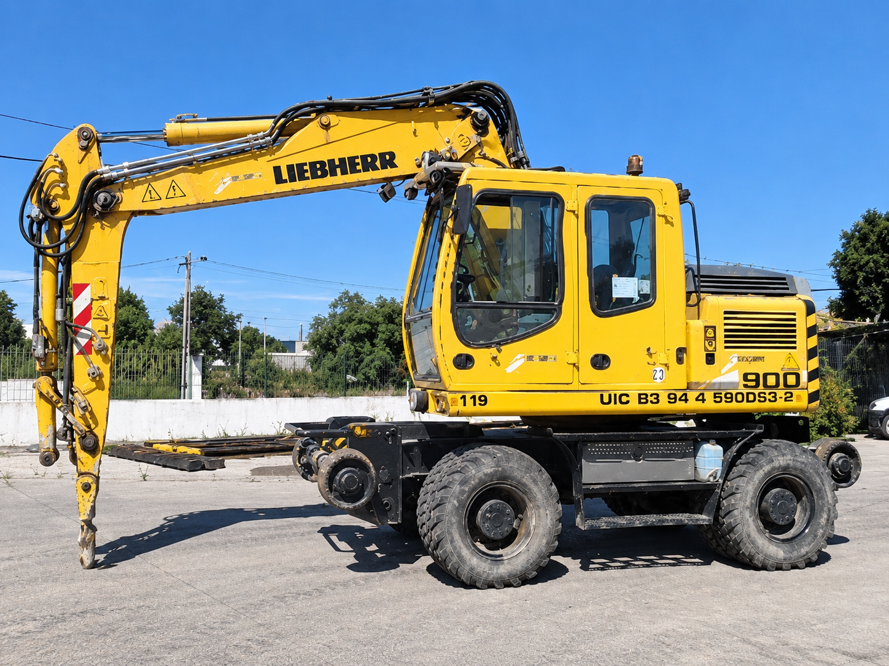
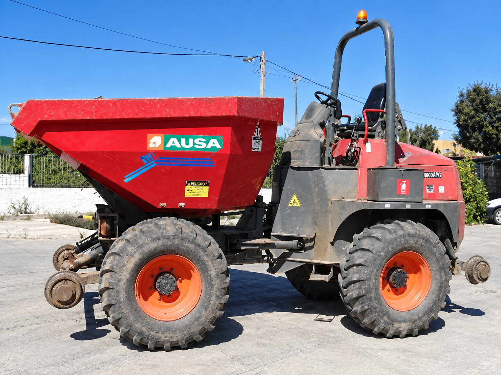
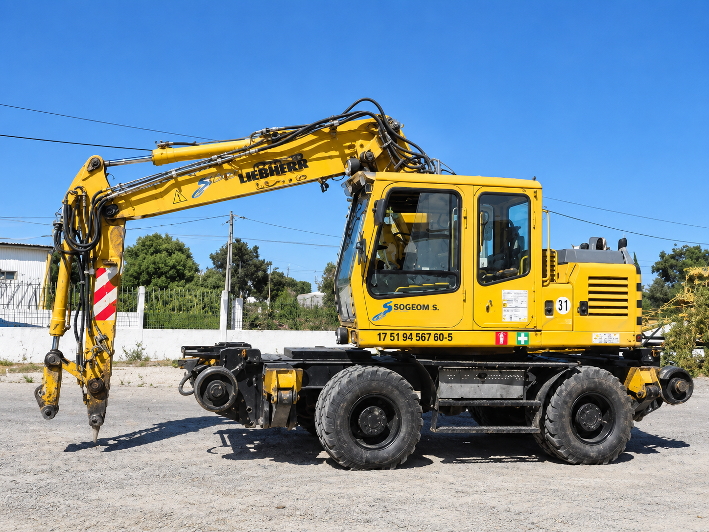
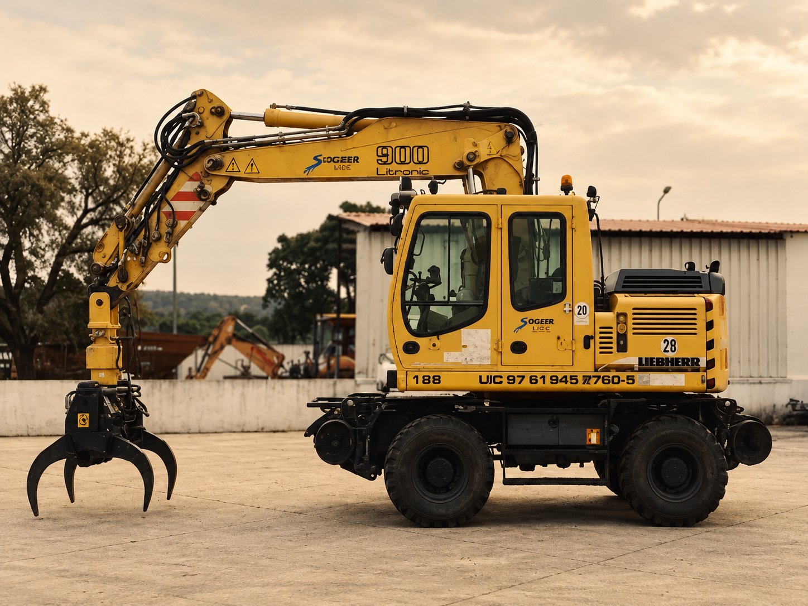
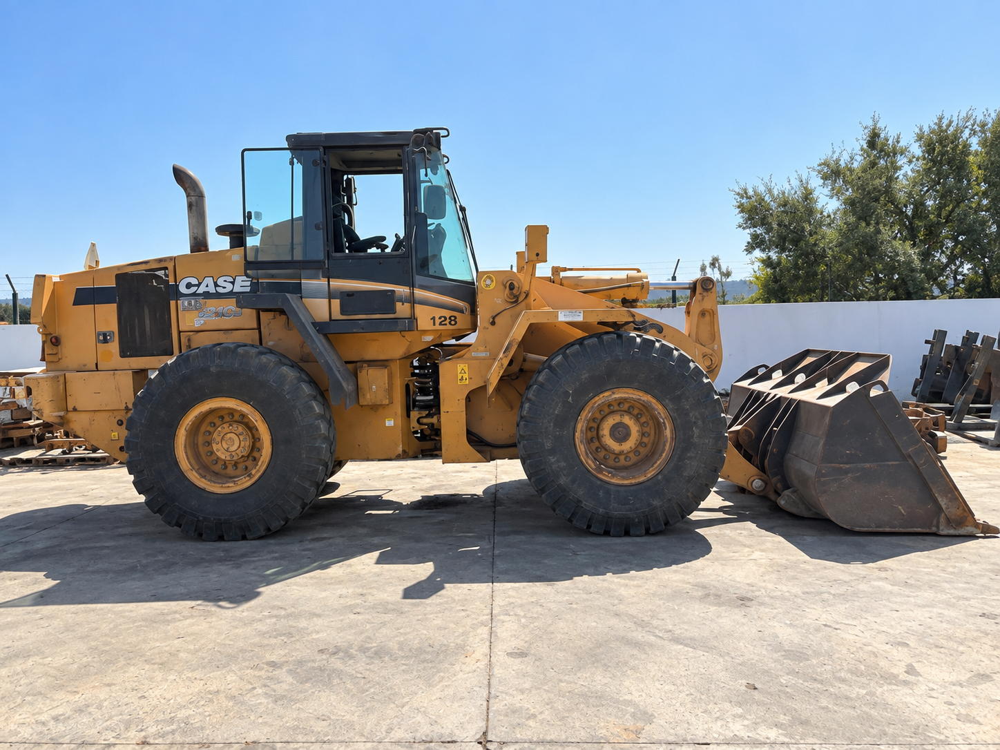
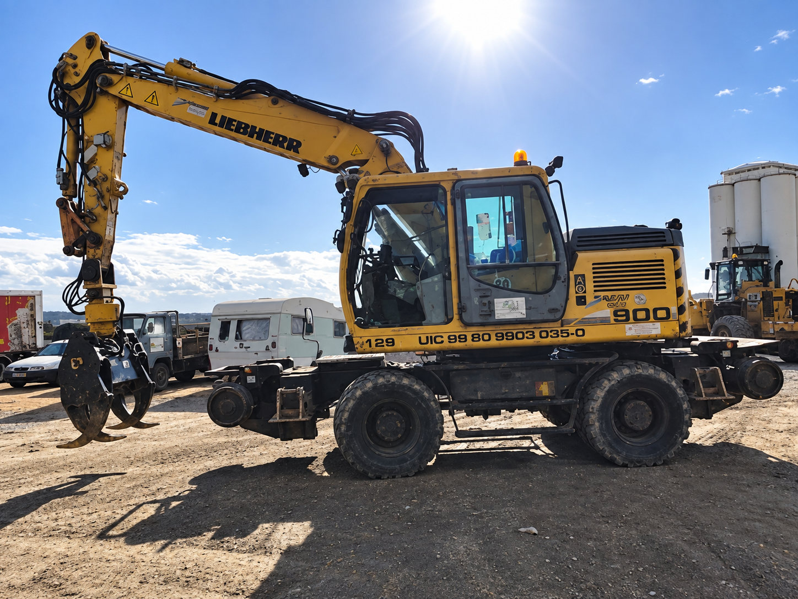
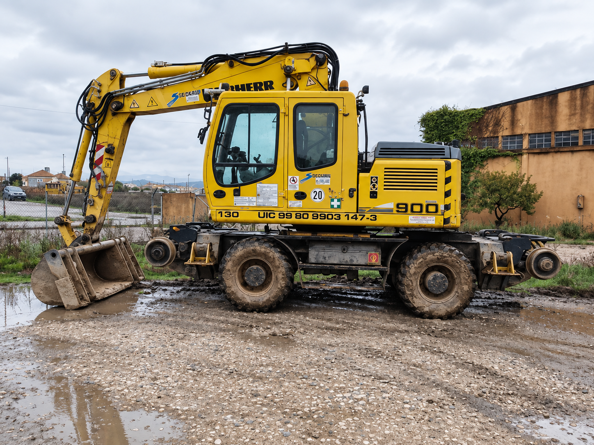
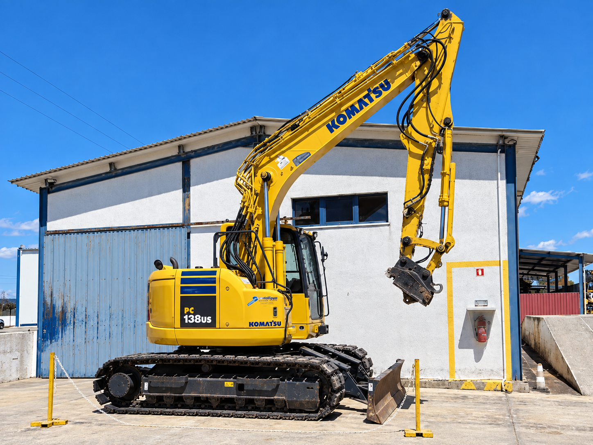

Giratórias bi-modais Liebherr A900 ZW — que operam sobre carril e sobre estrada — apoiadas por retroescavadora, dumper e pá carregadora. Meios próprios que garantem rapidez, controlo e autonomia em cada obra.







